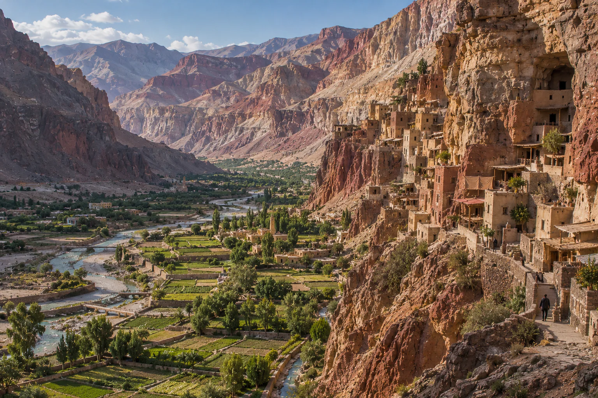

Place record 02 · Seasonal floodplain
Taqer
A land shaped by the coming and retreat of water—and by the lives that know before people do.
Taqer is organised around the rhythm of seasonal water. Settlements, fields and routes occupy a valley whose shape changes with the floodplain.
The regional record remains partial. Its central relationship between water, habitation and animal knowledge is established; the finer social and geographic detail remains open.